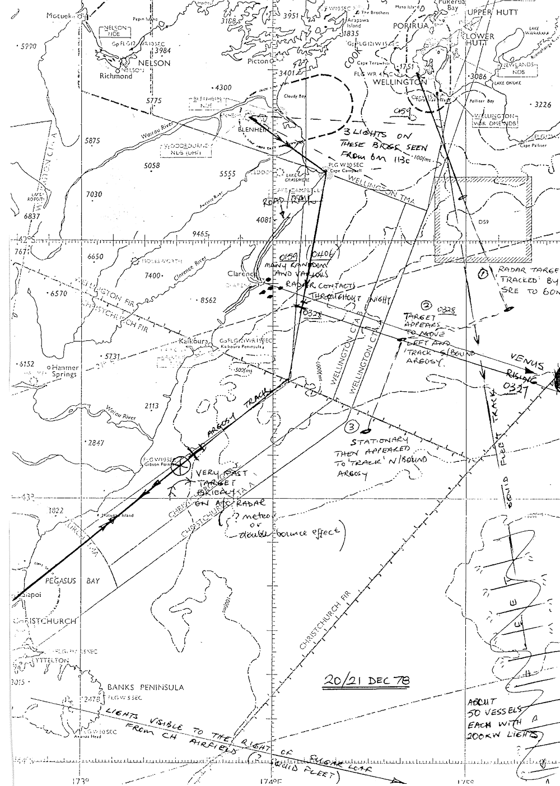
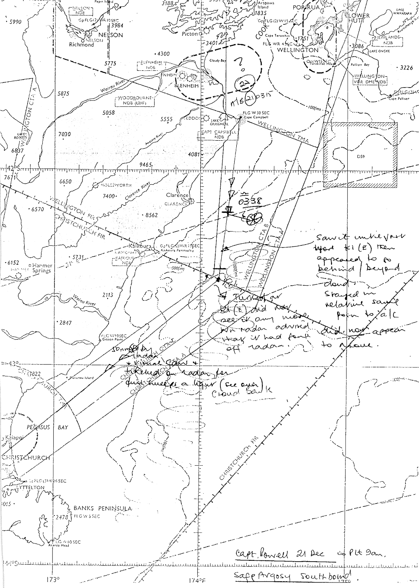
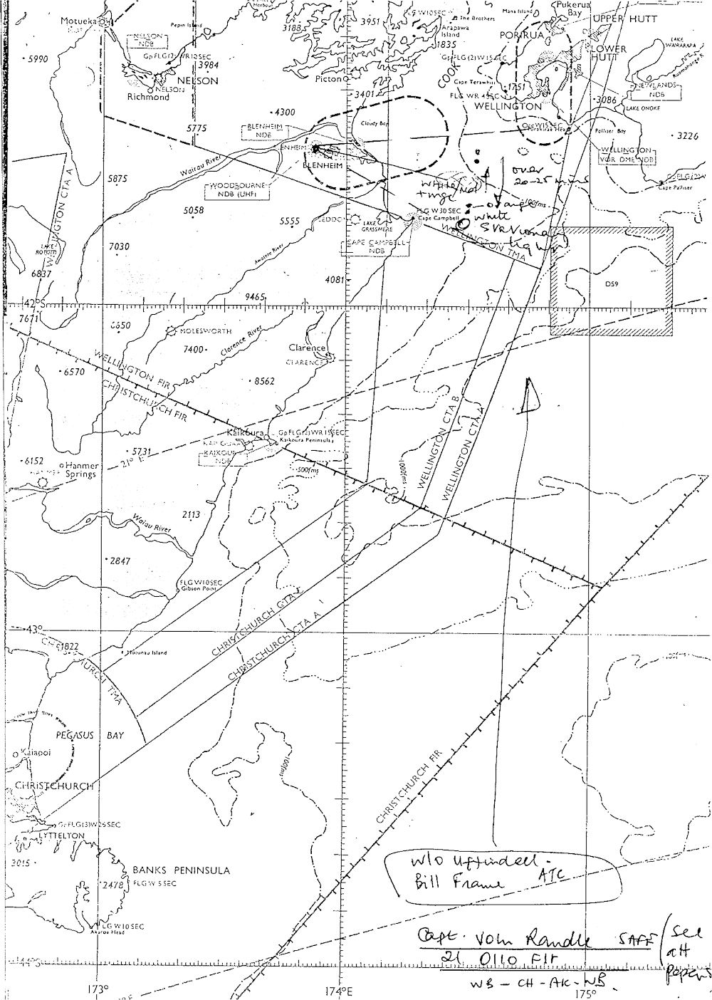

• Date 21st/22nd December 1978 • Time Early Mornings • Place South Island
• Date 21st/22nd December 1978 • Time Early Mornings • Place South Island
• Date 21st/22nd December 1978 • Time Early Mornings • Place South Island
Report
SUMMARY OF INTERVIEW WITH CAPTAIN J. RANDLE
1.Captain Randle was the Captain of a SAFE Argosy that took off from Woodbourne 22 Dec 78 at 0110 for a Woodbourne, Christchurch, Auckland, Woodbourne flight.
2.When going on duty at about midnight he observed what could have been two vehicles on the hills towards the Cape Campbell direction moving in a northerly direction. He thought these could be two landrovers driving fairly fast over very rough terrain. He makes this observation because of the light beams described by the Woodbourne Orderly Officer and Mr Frame.
3.At 0159 on the south-bound leg to the Christchurch with Christchurch visible from Cape Campbell and a clear sky he was asked by Wellington radar to check the Clarence River area because Wellington were receiving radar returns from that area. He observed some lights at low level that could possibly have been in the Clarence area. When the aircraft was about 30 miles north the lights appeared to go out or disappear.
4.From Kaikoura east the aircraft plotted on radar a large vessel 17 miles northeast of Motunau about seven miles off the coast. The crew had visual contact with a ships [SIC] lights in that position. However Captain Randle estimates that for the size of the radar return the ship must have been fairly large (1,000 tons [SIC] or so), and he considered it unusual that such a large vessel would have been so close to the coast.
5.At 0406 enroute to Auckland from Christchurch Wellington Radar again requested that the Clarence river radar returns be checked. The aircraft captain confirmed that lights were visible in that area out to sea and he got the impression of the lights making a rectangular pattern at irregular frequency. The lights had a beam appearance rather than a point source appearance and seemed to ‘turn away’ rather than turn off. One light appeared to illuminate the surface and Captain Randle assesses that the source of the light could have been at about 1,000 feet.
6.The Clarence returns were the only ones that Captain Randle was asked to look at.
7.Captain Randle has produced two sets of notes, one made during the flight and one afterwards proving his comment/speculation about the incident.
Attached Notes
NOTES COMPILED BY CAPTAIN J. RANDLE SAFE ARGOSY FLIGHT 22 DEC 78 WOODBOURNE/CHRISTCHURCH/AUCKLAND
1.South-bound. Lights were seen close to shore which corresponded with Wellington radar returns at ranges of 30 plus miles. These were unusually bright for normal ground lights and in one case appeared to be lighting up the surface in the Kekerenge(?) district. None were continuous. In some/most cases seemed directional (beam not point source). I saw no lights closer than 30 odd miles which were not (most probably) ships.
2.
a.Aircraft radar return about Gore Bay about seven miles off coast then lights corresponding to fair size ship.
b.Three light groups with two defined radar returns about 050 / 25 nautical miles Christchurch. At points of letter L with about three and eight miles arms. Centre target apparently large ship with floodlit decks.
3.North-bound. No unusual lights, other than known ships. In mid straits a 180º check showed lights corresponding to Wellington radar position off Clarence. These behaved like unexplained lights in para 1, intensity and with switching effect with some possible sea/cloud reflection light not constant in bearing and possible in altitude—or two plus sources. Wellington radar targets which were close to us both north and south-bound and were not ships, were not seen visually or on our radar i.e. the mystery lights were not observed at less than 30 odd miles. Venus(?) was low and very bright to east and while this would not affect radar it could give some red / white light effects visually. Cloud cover u/u Venus about 4/8ths. Our radar will not scan normally targets smaller than about 800 tons [SIC]—say Holm line beats—First Officer noted two light sources which I did not see:
a.Green light.
b.Fast white light.
c.Will differ in some details.
Randle’s personal notes
Comment, Speculation.
From inflight notes. My/our sightings were most undramatic and while no accurate count was made, five modern, say Iroquois type helicopters could have produced the whole performance.
When the surface was briefly lit up, in both directions, the illumination was V/V A/C landing lights of about 750 watts stronger and consistent with a light of somewhere up to 2000 watts at about 1,000 feet. While all light sources were consistent with this assumed strength focussing effects could have produced apparent strength, but not surface floodlighting.
The ability of our weather radar to pick up surface ships is based against visual checks on Jap fishing boats during attempts to range, and pot them. It is always possible that Tom Hood has screwed up the gear a notch and this estimate is invalid.
A normal number of presumed fishing boat lights which did not give returns on our radar were seen. The vessels mentioned were unusual by virtue of their assumed tonnage and area and tracks. There was no other reason to consider them unusual. They were not inconsistent, taken together with a Russian whaling/shipping fleet where the standard vessels are larger than the Jap (I have not targeted a Russian size vessel with our radar, this is an assumption).
The only question with MY sightings is not how, for helicopters could easily have reproduced all radar and visual effects, but why. IE I don’t want to blame anyone Russiians [SIC] or RNZAF they both could, it is illogical to assume either would. The undramatic nature of my sightings does not mean that I have any doubts as to the validity of what others saw (Pilots I mean). Just that I can’t comment on what I didn’t see.
I would exclude:
Mutton birds… lights and nature and one target too far to sea and speeds given of up to 120 knots, surfac [SIC] wind assumed to be almost calm.
Duct propogation [SIC]. Impossible on angles.
Venus. I could see Venus Northbound as well as lights.
Meteors. Stationary?
Boats. May have been related but were not source of ‘radar’ light.
Electrical Disturbance. Twenty knot winds at height, near calm no surf line visible on surface. No buildups. Stratiform cloud 8/8 ever breaking to 2–4/8 far to East. Near perfect vis under cloud. No cloud below about 15000 southbound and perhaps a bit lower 14000 Noryhbound [SIC] in area.
Distress flares, fire orks [SIC] etc. Not consistent with these, several sources close, in miles. Does not account for radar.
As noted Venus was at an altitude and Brilliance [SIC] to give some illusions and at least one ground report on noght [SIC] seemed related to this.
Report
SUMMARY OF INTERVIEW WITH W/O UFFINDELL AND MR FRAME
1. Messrs Uffindell and Frame were the Woodbourne Orderly Officer and Flight Service Duty Officer on the night 20/21 Dec 78.
2.At 2350 hours Mr Uffindell saw what he initially considered to be the three lights of a Bristol Freighter airdraft [SIC] three to four miles away from Woodbourne on finals for the airfield. The lights did not get any closer he then checked the lights through binoculars and determined that they appeared to be going to Wellington northward. The lights appeared to move upward and around in rectangles. He observed the lights for about 50 minutes. The bearing from Woodbourne was about 080 degrees magnetic that is towards Cape Palliser. At one stage the lights appeared to ‘rush forward’. Over a period the light seemed to move northeast and then gradually faded. He describes the light’s appearance as looking like somebody spotlighting. There was no cloud in the sky.
3.The largest of the three lights was yellowish and the other two were white. They were initially observed beyond Cape Campbell and then moved north. They were about one inch apart when measure at arms length.
4.Mr Frame in company with W/O Uffindell observed the lights from the control tower balcony. He describes the three lights as having one bright orange and two other less intense lights. The large orange light appeared fairly stationary and the other two appeared to move north. A shaft appeared from the two white lights angling down at about 40 degrees in a northely [SIC] direction. Using binoculars apparently had no enlarging effect on the lights! Mr Frame notified ATC Wellington of his observations and was told by Wellington that they had five radar targets in the Clarence area. (Apparently nothing to do with the Woodbourne sightings.)
5.The lights appeared to be slightly above the hills to the southeast of Blenheim and all but one disappeared over a period. One of the smaller lights was still visible when the Argosy took off about 0120 hours.
6.At 0325 Wellington phone Mr Frame to say they had a large target east-north-east of White Bluffs (Wairau Bar). Nothing was visible from the Woodbourne tower.
7.At about 0335 Mr Frame observed a white / red tinged light (alternating) for about five minutes.
8.Messrs Uffindell and Frame will produce a map showing more accurately the bearings from Woodbourne on which they made their observations.
Report
SUMMARY OF INTERVIEW WITH CAPTAIN V. POWELL
1. Captain Powell with First Officer Pirie were the crew of a SAFE Argosy from Woodbourne to Christchurch and then Dunedin on 22 Dec 78. The aircraft departed Woodbourne at 0315 hours. The weather throughout the flight was good with a light north-easterly wind and cloud to the east of the South Island. There was no turbulence.
2.At 0330 Wellington ATC asked the crew to investigate the Clarence River area for radar returns that Wellington was picking up. The aircraft crew did not observe any activity either on radar or visually.
3.At 0338 the crew were asked by Wellington Radar to identify a strong radar return that Wellington was receiving about 25 nautical miles to the port of the Argosy. Both the captain and the First Officer observed a very bright light which they variously described as bright orb/pear shaped—reddish tinge then turned white. From the aircraft the object appeared to be stationary by visual observation however by radar the object appeared to ‘track the aircraft’. It appeared to be very close—less than ten miles. (Although the light was on the bearing indicated by the aircraft radar and apparently in the position described by Wellington Radar confirmation is necessary as to whether the light could in face have been at great distance bearing in mind the crew would have no backdrop to assess distances—query depth perception.) The light passed behind it out of sight and radar contact. (When the crew say the light tracked the aircraft confirmation is necessary that it was seen to move on radar because by visual observation it appeared stationary which in fact would indicate that the light was at a great distance from the aircraft.)
4.At 0400 when 50 miles northeast of Christchurch the Captain observed on the aircraft radar a return that approached the aircraft very rapidly and then veered off sharply to the aircraft’s left. During a period of about five seconds about five radar returns were received and in the space of that time the blips passed through a distance of some 15 miles on the radar range scale and then disappeared from the radar screen. (10,000mph per hour!) During this period the aircraft radar was also plotting ships near the coast. Simultaneously the First Officer observed a light he describes as being like a Boeing flashing strobe light which followed the same path as the radar returns. (This episode above all others caused both aircrew mild consternation to say the least!)
5.Captain Powell checked with Christchurch radar whether they had had any radar contacts but were advised that it was ‘not worth having the radar on’. (Check whether Wellington radar observed anything.)
Map showing Details of Events (/3)
Report taken from file number
AIR 1080/6/897 Volume 1
×